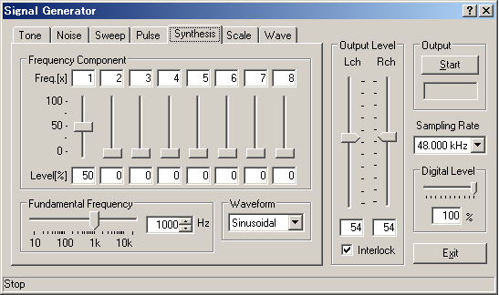
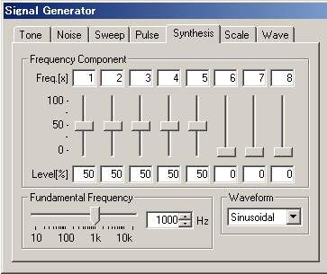
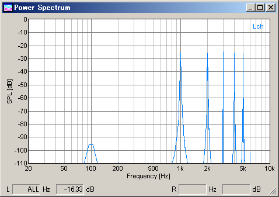
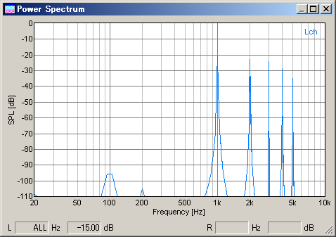

DSSF3 > RA > Reference Manual > Signal Generator

| Item | Description | |
|---|---|---|
| Frequency Component | Freq. [x] | Specify the overtones as .x times of the fundamental frequency. |
| Level [%] | Specify the levels of the overtones in %. | |
| Fundamental frequency | Specify the fundamental frequency of the signal by the slider or enter the value. | |
| Waveform | Select the waveform of output sound. | |
| Left: Signal generator, Right: FFT analyzer | |
| Ex.1: Fundamental frequency is 1000 Hz, overtones are x1, x2, x3, x4, and x5 with levels of 50 %. | |
 |
 |
| Ex.2: Fundamental frequency is 1000 Hz, overtones are x1-x5, with levels of 100, 80, 60, 40, 20 %. | |
 |
|
DSSF3 > RA > Reference Manual > Signal Generator